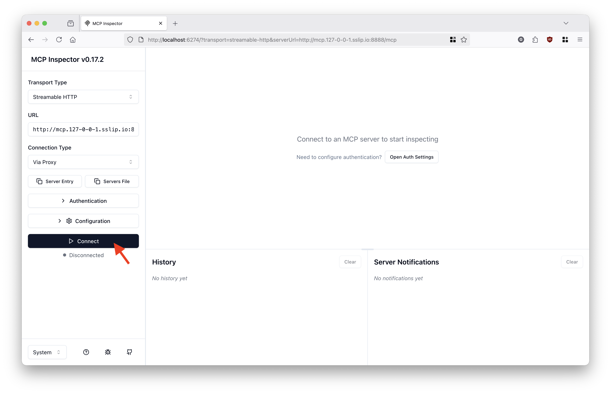
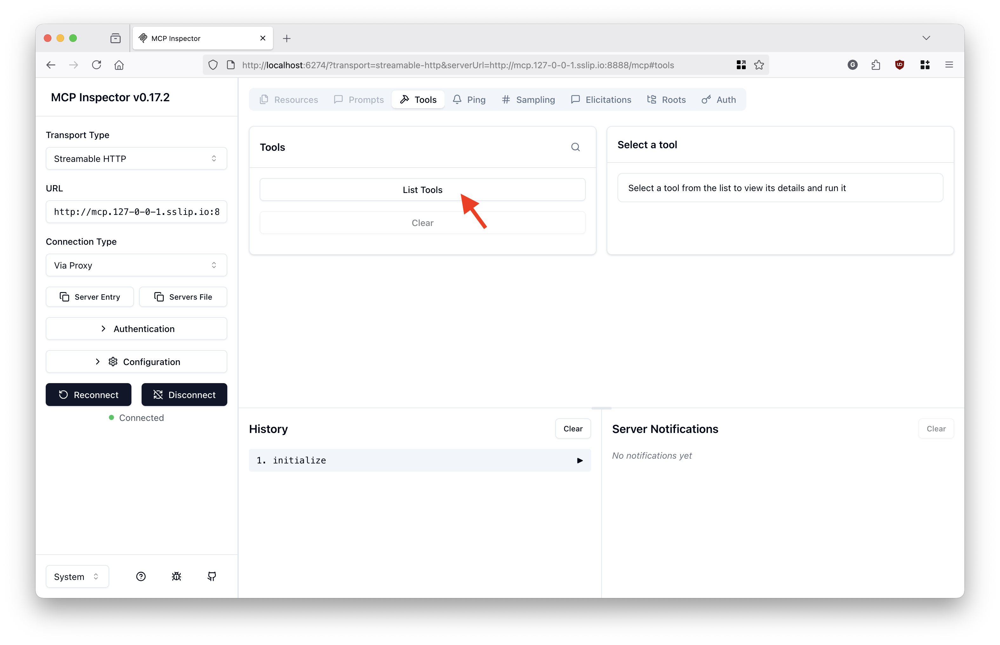
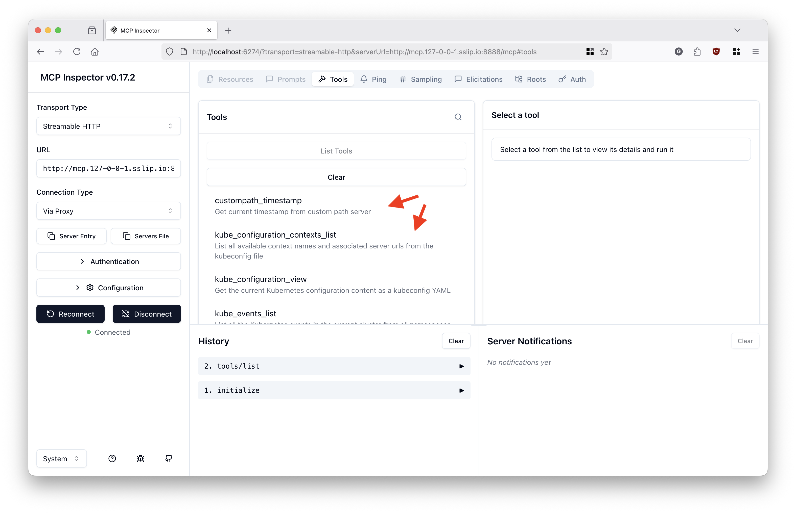
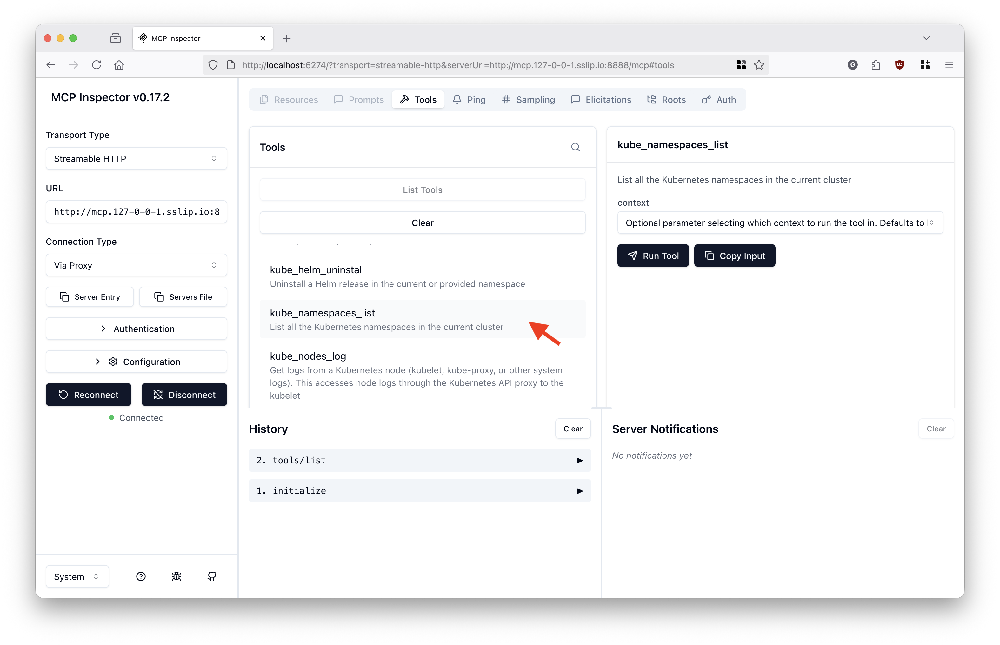
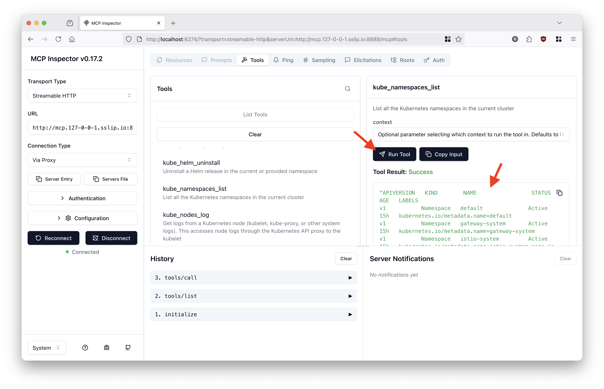

Kubernetes MCP Server¶
This guide demonstrates how to add the Kubernetes MCP server as an external MCP server behind the MCP Gateway.
This guide assumes you have an active, standard Kubernetes cluster with the MCP Gateway already installed and accessible.
This demo is part of a 3-use case series:
Use case 1: No auth¶
In this use case, the Kubernetes MCP server does not handle authentication for the client. It uses the access from the current .kube/config file to connect to the known Kubernetes clusters when tools are called.
Step 1: Setup the MCP Gateway stack¶
Ensure you have a standard Kubernetes cluster with the MCP Gateway already installed and running. If not, follow the installation instructions for the gateway first.
Step 2: Run the Kubernetes MCP server¶
Clone the Kubernetes MCP server repo:
Build a fresh new version of the MCP server:
Run the MCP server on port 9999:
Note: The command above will hold the shell. Start a new session to run the next steps.
Step 3: Register the MCP server with the MCP Gateway¶
Add a dedicated gateway listener for the external MCP server. Gateway API requires a valid DNS hostname for listeners. Replace kubernetes-mcp.example.com with the actual reachable hostname of the machine running the MCP server.
# Note: If you start a new shell session later, you must re-export this variable.
export EXTERNAL_HOSTNAME="kubernetes-mcp.example.com"
kubectl patch gateway mcp-gateway -n gateway-system --type json -p="[
{
\"op\": \"add\",
\"path\": \"/spec/listeners/-\",
\"value\": {
\"name\": \"kubernetes-mcp\",
\"hostname\": \"$EXTERNAL_HOSTNAME\",
\"port\": 8080,
\"protocol\": \"HTTP\",
\"allowedRoutes\": {
\"namespaces\": {
\"from\": \"All\"
}
}
}
}
]"
Create a route, external service and MCPServerRegistration custom resource:
kubectl create namespace mcp-test
kubectl apply -n mcp-test -f - <<EOF
apiVersion: gateway.networking.k8s.io/v1
kind: HTTPRoute
metadata:
name: kubernetes-mcp
spec:
parentRefs:
- group: gateway.networking.k8s.io
kind: Gateway
name: mcp-gateway
namespace: gateway-system
hostnames:
- $EXTERNAL_HOSTNAME
rules:
- matches:
- path:
type: PathPrefix
value: /mcp
backendRefs:
- group: ""
kind: Service
name: kubernetes-mcp-external
port: 9999
---
apiVersion: v1
kind: Service
metadata:
name: kubernetes-mcp-external
spec:
type: ExternalName
externalName: $EXTERNAL_HOSTNAME
ports:
- name: http
port: 9999
targetPort: 9999
protocol: TCP
appProtocol: http
---
apiVersion: networking.istio.io/v1beta1
kind: ServiceEntry
metadata:
name: kubernetes-mcp
namespace: mcp-test
spec:
hosts:
- $EXTERNAL_HOSTNAME
ports:
- number: 9999
name: https
protocol: HTTP
location: MESH_EXTERNAL
resolution: DNS
---
apiVersion: mcp.kuadrant.io/v1alpha1
kind: MCPServerRegistration
metadata:
name: kubernetes-mcp-server
spec:
prefix: kube_
targetRef:
group: gateway.networking.k8s.io
kind: HTTPRoute
name: kubernetes-mcp
EOF
Step 4: Try the MCP server behind the gateway¶
Connect your preferred MCP client or the MCP Inspector to your MCP Gateway's endpoint.
In the MCP Inspector, configure the connection URL and click Connect:

List the available MCP tools:

Notice the multiple MCP tools from various test MCP servers behind the gateway, including tools from the Kubernetes MCP server (prefixed with kube_):

Select Kubernetes MCP server's namespaces_list tool:

Call the tool:

Use case 2: OIDC auth¶
This use case handles OIDC authentication with token passthrough from the Kubernetes MCP server to the Kubernetes clusters.
The accessible Kubernetes API servers accept same-domain OIDC access tokens, which are obtained by the MCP gateway on behalf of the MCP clients via Standard OAuth2 Token Exchange.
Requisite: You have successfully completed Use case 1: No auth.
Step 1: Enable auth for tool/list and tool/call requests in the MCP Gateway¶
Ensure your MCP Gateway is configured with OIDC authentication (see the Authentication Guide for setup details) and a Keycloak (or other OIDC provider) instance is available.
You must also have a Kubernetes Secret named token-exchange in the mcp-test namespace containing your OIDC client credentials (with an oauth-client-basic-auth key). For example:
kubectl create secret generic token-exchange -n mcp-test \
--from-literal=oauth-client-basic-auth="Basic <base64-encoded-client-id:client-secret>"
Step 2: Create an AuthPolicy for the Kubernetes MCP server route¶
In the policy below, replace https://keycloak.example.com and https://mcp.example.com with your actual OIDC provider and MCP client endpoints.
kubectl apply -f -<<EOF
apiVersion: kuadrant.io/v1
kind: AuthPolicy
metadata:
name: kubernetes-mcp-auth-policy
namespace: mcp-test
spec:
targetRef:
group: gateway.networking.k8s.io
kind: HTTPRoute
name: kubernetes-mcp
rules:
authentication: #validates the token
'keycloak':
jwt:
issuerUrl: https://keycloak.example.com/realms/mcp
metadata:
oauth-token-exchange:
when:
- predicate: type(auth.identity.aud) != string || auth.identity.aud != request.headers['x-mcp-servername']
http:
url: https://keycloak.example.com/realms/mcp/protocol/openid-connect/token
method: POST
credentials:
authorizationHeader:
prefix: Basic
sharedSecretRef:
name: token-exchange
key: oauth-client-basic-auth
bodyParameters:
grant_type:
value: urn:ietf:params:oauth:grant-type:token-exchange
subject_token:
expression: request.headers['authorization'].split('Bearer ')[1] # remove "Bearer "
subject_token_type:
value: urn:ietf:params:oauth:token-type:access_token
audience:
expression: request.headers['x-mcp-servername']
scope:
value: openid profile groups
authorization:
'token':
opa:
rego: |
scoped_jwt := object.get(object.get(object.get(input.auth, "metadata", {}), "oauth-token-exchange", {}), "access_token", "")
jwt := j { scoped_jwt != ""; j := scoped_jwt }
jwt := j { scoped_jwt == ""; j := split(input.request.headers["authorization"], "Bearer ")[1] }
claims := c { [_, c, _] := io.jwt.decode(jwt) }
allow = true
allValues: true
priority: 0
'scoped-audience-check':
patternMatching:
patterns:
- predicate: has(auth.authorization.token.claims.aud) && type(auth.authorization.token.claims.aud) == string && auth.authorization.token.claims.aud == request.headers['x-mcp-servername']
priority: 1
'tool-access-check':
patternMatching:
patterns:
- predicate: |
request.headers['x-mcp-toolname'] in (has(auth.authorization.token.claims.resource_access) && auth.authorization.token.claims.resource_access.exists(p, p == request.headers['x-mcp-servername']) ? auth.authorization.token.claims.resource_access[request.headers['x-mcp-servername']].roles : [])
priority: 1
response:
success:
headers:
authorization:
plain:
expression: |
"Bearer " + auth.authorization.token.jwt
unauthenticated:
headers:
'WWW-Authenticate':
value: Bearer resource_metadata=https://mcp.example.com/.well-known/oauth-protected-resource/mcp
body:
value: |
{
"error": "Unauthorized",
"message": "MCP Tool Access denied: Authentication required."
}
unauthorized:
body:
value: |
{
"error": "Forbidden",
"message": "MCP Tool Access denied: Insufficient permissions for this tool."
}
EOF
Step 3: Authorize the mcp Keycloak user for the Kubernetes API server¶
kubectl apply -f -<<EOF
apiVersion: rbac.authorization.k8s.io/v1
kind: ClusterRoleBinding
metadata:
name: oidc-mcp-cluster-admin
roleRef:
apiGroup: rbac.authorization.k8s.io
kind: ClusterRole
name: cluster-admin
subjects:
- apiGroup: rbac.authorization.k8s.io
kind: User
name: https://keycloak.example.com/realms/mcp#mcp
EOF
Step 4: Try the MCP server behind the gateway with OIDC authentication and token exchange performed by the MCP gateway¶
Follow the same steps as before to try the MCP server behind the gateway using your MCP client.
Note: You may need to add an exception for your browser to trust your OIDC provider's self-signed server certificate if applicable.
When redirected to the Keycloak login page, authenticate with username/password: mcp / mcp.
The tool/list response shall now be filtered only to the tools the mcp user has access to.
When calling any of the Kubernetes MCP server tools, an authentication token such as the following ones shall be the obtained and injected by the MCP gateway into the request to the MCP server. The MCP server will pass the token through to the Kubernetes API server for authentication:
{
"aud": "mcp-test/kubernetes-mcp",
"azp": "mcp-gateway",
"exp": 1763123081,
"family_name": "mcp",
"given_name": "mcp",
"groups": [
"accounting",
"engineering",
"mcp-users"
],
"iat": 1763121281,
"iss": "https://keycloak.example.com/realms/mcp",
"jti": "ntrtte:1a144de4-8206-3ae1-1c12-9e67a5cc207f",
"name": "mcp mcp",
"preferred_username": "mcp",
"resource_access": {
"mcp-test/kubernetes-mcp": {
"roles": [
"configuration_view",
"nodes_log",
"nodes_stats_summary",
"pods_list",
"pods_delete",
"resources_delete",
"pods_run",
"pods_exec",
"helm_list",
"pods_log",
"resources_get",
"resources_list",
"nodes_top",
"namespaces_list",
"helm_uninstall",
"configuration_contexts_list",
"events_list",
"pods_get",
"helm_install",
"pods_top",
"resources_create_or_update",
"pods_list_in_namespace"
]
}
},
"scope": "openid profile groups",
"sid": "b8298efe-69a0-4f89-99d4-aec3c921bdeb",
"sub": "df901145-417d-493b-9c54-7869f08c7b72",
"typ": "Bearer"
}
Use case 3: Cross-domain auth¶
This use case handles token exchange across different auth domains so multiple Kubernetes clusters can be called by the MCP server, with each cluster deployed to its own OIDC domain.
-- TODO --